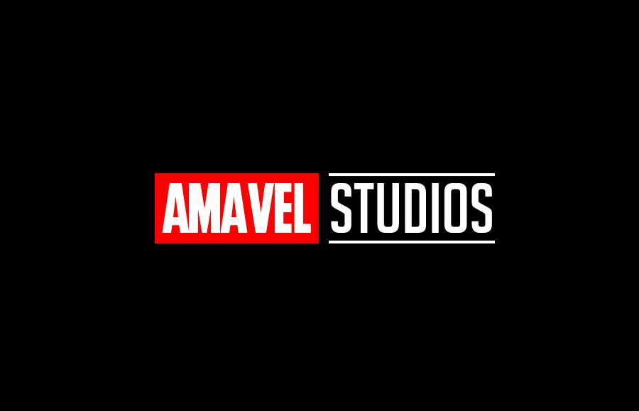

Sobre mim
Meu nome é Victor Lira da Silva, tenho 16 anos e nasci no dia 08 de Abril de 2007, moro em Diadema desde que nasci, estou no segundo ano do ensino médio no SESI-426 e também estou cursando a área de Desenvolvimento de sistemas no SENAI- Manuel Garcia Filho, onde espero sair com um conhecimento mais avançado na área de tecnologia.
Sou uma pessoa bem divertida e gosto bastante de fazer as outras pessoas darem diversas risadas ao meu lado, já fui muito introvertido pelo motivo que já fui muito excluído, porém hoje em dia estou cada vez mais extrovertido, gosto bastante de tecnologia em geral, gosto bastante do curso que venho fazendo no Senai, pois estou aprendendo cada vez mais sobre tecnologia em geral.
Minha meta é terminar a escola normal e terminar a escola técnica que é o Senai, no SENAI espero sair com um conhecimento bem avançado sobre tecnologia e pretendo trabalhar nessa área no futuro onde sei que pode me dar uma boa renda e também porque tudo insinua que o futuro vai ser praticamente tecnologia basicamente, pois o mundo inteiro tá ficando cada vez mais tecnológico e digital. Pretendo fazer faculdade logo após terminar a escola e já começar a trabalhar também para obter uma independência financeira e poder me bancar.
Projeto
Amável (Paródia do site oficial da Marvel)

Ir para o site
Este projeto é uma paródia do site original do site Marvel, foi realizado em grupo para a matéria de Linguagem de Marcação no Senai "Manuel Garcia Filho", eu acabei ficando com a parte de jogos do site, porém não fiquei fazendo apenas essa parte, ajudei também meus companheiros que estavam com dificuldade de realizar algumas coisas no site ou na edição de imagens, e foi na edição de imagens que consegui tirar risadas de muitas pessoas na hora da apresentação, quase tiramos a nota máxima na apresentação, só não conseguimos devido ao nervosismo do grupo na hora de apresentar
Contato